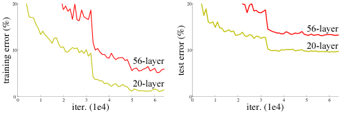
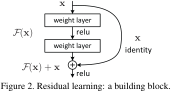

深度残差学习用于图像识别
Kaiming He Xiangyu Zhang Shaoqing Ren Jian Sun 微软研究院 {kahe, v-xiangz, v-shren, jiansun}@microsoft.com
摘要
更深的神经网络更难以训练。我们提出了一种残差学习框架，以简化那些远深于以往网络的训练。我们显式地将各层重新表述为参照层输入来学习残差函数，而不是学习无参考的函数。我们提供了全面的实证证据，表明这些残差网络更易于优化，并且能够从显著增加的深度中获得精度提升。在 ImageNet 数据集上，我们评估了深度高达 152 层的残差网络——比 VGG 网络 [41] 深 8 倍，但复杂度更低。这些残差网络的集成在 ImageNet 测试集上取得了 3.57% 的错误率。这一结果赢得了 ILSVRC 2015 分类任务的第一名。我们还给出了 CIFAR-10 上 100 层与 1000 层网络的分析。 表示的深度对许多视觉识别任务至关重要。仅仅凭借我们极其深层的表示，我们就在 COCO 目标检测数据集上获得了 28% 的相对提升。深度残差网络是我们参加 ILSVRC 与 COCO 2015 竞赛提交方案的基石1，在这些竞赛中，我们还赢得了 ImageNet 检测、ImageNet 定位、COCO 检测和 COCO 分割四项任务的第一名。
1. 引言
深度卷积神经网络 [22, 21] 引发了图像分类领域的一系列突破 [21, 50, 40]。深度网络以端到端的多层方式自然地整合了低/中/高层特征 [50] 与分类器，而特征的"层次"可以通过堆叠的层数（深度）来丰富。最近的证据 [41, 44] 表明网络深度至关重要，而在极具挑战性的 ImageNet 数据集 [36] 上的领先结果 [41, 44, 13, 16] 全部利用了"非常深" [41] 的模型，其深度从十六层 [41] 到三十层 [16]。许多其他重要的视觉识别任务 [8, 12, 7, 32, 27] 也从非常深的模型中大为受益。
1 http://image-net.org/challenges/LSVRC/2015/ 与 http://mscoco.org/dataset/#detections-challenge2015.

图内文字（原文提取，待翻译）
20 20 56 层 10 10 20 层 56 层 20 层 0 0 1 2 3 4 5 6 00 1 2 3 4 5 6 迭代次数（1e4） 迭代次数（1e4） 测试误差（%） 训练误差（%）图 1：在 CIFAR-10 上使用 20 层与 56 层"普通"网络的训练误差（左）与测试误差（右）。更深的网络具有更高的训练误差，因而测试误差也更高。ImageNet 上的类似现象见图 4。 受深度重要性的驱动，一个问题自然浮现：让网络学得更好，是否就像堆叠更多层一样简单？ 回答这一问题的一个障碍，是臭名昭著的梯度消失/梯度爆炸问题 [1, 9]，它在训练之初就阻碍收敛。然而，这一问题已在很大程度上被标准化初始化 [23, 9, 37, 13] 与中间归一化层 [16] 所解决，使得数十层的网络能够以带反向传播的随机梯度下降（SGD）开始收敛 [22]。 当更深的网络能够开始收敛时，一个_退化_问题便暴露出来：随着网络深度增加，精度达到饱和（这或许并不奇怪），随后迅速退化。出人意料的是，这种退化_并非由过拟合引起_——向一个适当深度的模型添加更多层，反而会导致_更高的训练误差_，如 [11, 42] 所报告，并被我们的实验充分验证。图 1 给出了一个典型例子。 （训练精度的）退化表明，并非所有系统都同样易于优化。让我们考虑一个较浅的架构，以及在其上添加更多层而得到的更深的对应网络。对更深的模型而言，存在一个_构造性_的解：新增的层采用_恒等_映射，其余层则从已学习好的较浅模型复制而来。这一构造解的存在表明，更深的模型的训练误差不应高于其较浅的对应网络。但实验表明，我们现有的求解器无法找到与构造解相当或更好的解（或无法在可行时间内做到）。

图内文字（原文提取，待翻译）
x 权重层 F ( x ) relu x 权重层 恒等 F ( x )+ x relu 图 2：残差学习：一个构建模块。在本文中，我们通过引入_深度残差学习_框架来应对退化问题。我们不再指望每个少量堆叠的层直接拟合期望的底层映射，而是显式地让这些层去拟合残差映射。形式化地，将期望的底层映射记为 $H(\mathbf{x})$，我们让堆叠的非线性层拟合另一个映射 $F(\mathbf{x}) := H(\mathbf{x}) - \mathbf{x}$。原始映射被重新表述为 $F(\mathbf{x}) + \mathbf{x}$。我们假设，优化残差映射比优化原始的、无参考的映射更容易。在极端情形下，如果恒等映射就是最优的，那么将残差推向零，比用一叠非线性层去拟合恒等映射更容易。 $F(\mathbf{x}) + \mathbf{x}$ 这一形式可以由带"快捷连接"（shortcut connections）的前馈神经网络实现（图 2）。快捷连接 [2, 34, 49] 是跳过一层或多层的连接。在我们的情形中，快捷连接简单地执行_恒等_映射，其输出与堆叠层的输出相加（图 2）。恒等快捷连接既不增加额外参数，也不增加计算复杂度。整个网络仍然可以由带反向传播的 SGD 端到端训练，并且可以方便地用常见库实现（e.g., Caffe [19]），而无需修改求解器。 我们在 ImageNet [36] 上给出了全面的实验，以展示退化问题并评估我们的方法。我们表明：1）我们极深的残差网络易于优化，而对应的"普通"网络（简单地堆叠层）在深度增加时表现出更高的训练误差；2）我们的深度残差网络能够轻松地从大幅增加的深度中获得精度提升，其结果大幅优于以往的网络。 类似的现象也出现在 CIFAR-10 数据集 [20] 上，这表明优化上的困难与我们方法的效果并非仅与某个特定数据集相关。我们在该数据集上给出了成功训练的、层数超过 100 的模型，并探索了层数超过 1000 的模型。
在 ImageNet 分类数据集 [36] 上，我们用极深的残差网络取得了优异的结果。我们的 152 层残差网络是迄今在 ImageNet 上展示过的最深的网络，同时其复杂度仍低于 VGG 网络 [41]。我们的集成在 ImageNet 测试_集上取得了 3.57% 的 top-5 错误率，并_赢得了 ILSVRC 2015 分类竞赛的第一名。这些极深表示在其他识别任务上也具有出色的泛化性能，并促使我们进一步在 ILSVRC 与 COCO 2015 竞赛中_赢得 ImageNet 检测、ImageNet 定位、COCO 检测和 COCO 分割的第一名_。这一强有力的证据表明，残差学习原则具有普适性，我们期待它同样适用于其他视觉与非视觉问题。
2. 相关工作
残差表示。 在图像识别中，VLAD [18] 是一种基于相对于字典的残差向量进行编码的表示，而 Fisher 向量 [30] 可以表述为 VLAD 的概率化版本 [18]。二者都是用于图像检索与分类的强大浅层表示 [4, 48]。对于向量量化，已有工作表明对残差向量编码 [17] 比对原始向量编码更为有效。 在底层视觉与计算机图形学中，为求解偏微分方程（PDEs），被广泛使用的多重网格方法 [3] 将系统重新表述为多个尺度上的子问题，其中每个子问题负责较粗尺度与较细尺度之间的残差解。多重网格的一种替代方法是分层基预处理 [45, 46]，它依赖于一组表示两个尺度之间残差向量的变量。已有证明 [3, 45, 46]，这些求解器比不了解解的残差性质的标准求解器收敛得快得多。这些方法表明，良好的重新表述或预处理能够简化优化。 快捷连接。 导向快捷连接 [2, 34, 49] 的实践与理论由来已久。训练多层感知机（MLPs）的一个早期做法，是添加一条从网络输入连接到输出的线性层 [34, 49]。在 [44, 24] 中，一些中间层被直接连接到辅助分类器，以应对梯度消失/爆炸问题。文献 [39, 38, 31, 47] 提出了借由快捷连接实现的方法，用于居中层响应、梯度与传播误差。在 [44] 中，"inception" 层由一个快捷分支与若干更深的分支组成。 与我们的工作同时期，"highway networks" [42, 43] 提出了带门控函数的快捷连接 [15]。这些门控依赖于数据且带有参数，与之相对，我们的恒等快捷连接是无参数的。当门控快捷连接被"关闭"（趋近于零）时，highway networks 中的层表示的是_非残差_函数。相反，我们的表述始终学习残差函数；我们的恒等快捷连接永远不会关闭，所有信息始终都会通过，同时还有额外的残差函数待学习。此外，highway networks 尚未在深度极大增加（e.g.，超过 100 层）时展示出精度提升。
3. 深度残差学习
3.1. 残差学习
设 $H(\mathbf{x})$ 为待若干堆叠层拟合的底层映射（不一定是整个网络），$\mathbf{x}$ 表示这些层中第一层的输入。若假设多个非线性层可以渐近地逼近复杂函数2，则等价于假设它们可以渐近地逼近残差函数，i.e.，$H(\mathbf{x}) - \mathbf{x}$（假设输入与输出维度相同）。因此，与其指望堆叠层去逼近 $H(\mathbf{x})$，不如显式地让这些层逼近一个残差函数 $F(\mathbf{x}) := H(\mathbf{x}) - \mathbf{x}$。原函数由此变为 $F(\mathbf{x}) + \mathbf{x}$。尽管两种形式都应能够渐近地逼近期望的函数（如假设所述），但学习的难易程度可能不同。 这一重新表述的动机，来自关于退化问题的反直觉现象（图 1, 左）。正如我们在引言中讨论的，如果新增层可以被构造为恒等映射，那么更深的模型的训练误差不应高于其较浅的对应网络。退化问题表明，求解器可能难以用多个非线性层去逼近恒等映射。在残差学习的重新表述下，如果恒等映射是最优的，求解器或许只需将多个非线性层的权重驱动向零，即可逼近恒等映射。 在真实情形中，恒等映射不太可能是最优的，但我们的重新表述或许有助于对问题进行预处理。如果最优函数比零映射更接近恒等映射，那么对求解器而言，参照恒等映射寻找扰动，比把该函数当作新函数来学习更容易。我们通过实验（图 7）表明，学习到的残差函数的响应总体上较小，这说明恒等映射提供了合理的预处理。
3.2. 基于快捷连接的恒等映射
我们对每个若干堆叠的层采用残差学习。一个构建模块如图 2 所示。形式化地，在本文中我们考虑如下定义的构建模块： $$y = F(x, \{W_i\}) + x. \tag{1}$$ 这里 $\mathbf{x}$ 与 $\mathbf{y}$ 是所考虑层的输入与输出向量。函数 $F(\mathbf{x}, \{W_i\})$ 表示待学习的残差映射。对于图 2 中具有两层 $F = W_2\,\sigma(W_1\,\mathbf{x})$ 的例子，其中 $\sigma$ 表示
2然而，这一假设仍是一个开放问题。参见 [28]。 ReLU [29]，且为简化记号而省略了偏置。运算 $F + \mathbf{x}$ 由快捷连接与逐元素加法完成。我们在相加之后采用第二次非线性（i.e.，$\sigma(\mathbf{y})$，见图 2）。 Eqn.(1) 中的快捷连接既不引入额外参数，也不引入计算复杂度。这不仅在实际中颇具吸引力，而且对我们比较普通网络与残差网络也很重要。我们可以公平地比较同时具有相同参数量、深度、宽度与计算成本的普通/残差网络（可忽略的逐元素加法除外）。 Eqn.(1) 中 $\mathbf{x}$ 与 $F$ 的维度必须相等。若并非如此（e.g.，当改变输入/输出通道数时），可以通过快捷连接执行线性投影 $W_s$ 来匹配维度： $$y = F(x, \{W_i\}) + W_s x. \tag{2}$$ 在 Eqn.(1) 中也可以使用方阵 $W_s$。但我们将通过实验表明，恒等映射足以应对退化问题，而且更为经济，因此 $W_s$ 仅在匹配维度时使用。 残差函数 $F$ 的形式是灵活的。本文的实验涉及的函数 $F$ 具有两层或三层（图 5），也可以有更多的层。但如果 $F$ 只有一层，Eqn.(1) 便类似于一个线性层：$\mathbf{y} = W_1\mathbf{x} + \mathbf{x}$，对此我们尚未观察到优势。 我们还要指出，尽管上述记号为简洁起见针对全连接层，但它们同样适用于卷积层。函数 $F(\mathbf{x}, \{W_i\})$ 可以表示多个卷积层。逐元素加法在两个特征图上逐通道进行。
3.3. 网络架构
我们测试了多种普通/残差网络，并观察到了一致的现象。为提供可供讨论的实例，我们在此描述针对 ImageNet 的两个模型。 普通网络。 我们的普通基线（图 3, 中）主要受到 VGG 网络 [41] 设计哲学（图 3, 左）的启发。卷积层大多采用 3×3 的滤波器，并遵循两条简单的设计规则：（i）对于相同的输出特征图尺寸，各层具有相同数量的滤波器；（ii）如果特征图尺寸减半，则滤波器数量加倍，以保持每层的时间复杂度。我们直接由步长为 2 的卷积层执行下采样。网络以一个全局平均池化层和一个带 softmax 的 1000 路全连接层收尾。在图 3（中）中，带权层的总数为 34。 值得注意的是，我们的模型比 VGG 网络 [41]（图 3, 左）具有_更少_的滤波器和_更低_的复杂度。我们的 34 层基线具有 3.6 十亿次 FLOPs（乘加运算），仅为 VGG-19（19.6 十亿次 FLOPs）的 18%。
说明：本文件为
academic-pdf-zhskill 的端到端演示样章（ResNet 第 1–3 页节选），由流水线真实产出：MinerU 兼容解析 → 结构审计 → 内容冻结 → 分块翻译 → 逐格表格任务 → 确定性组装 → 终检 PASS（见validation.md）。非完整论文翻译。